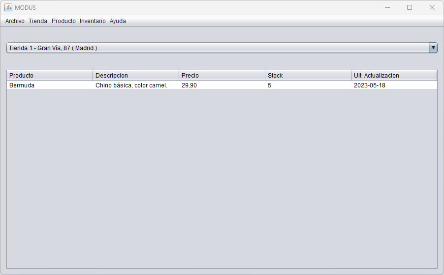

Bienvenido a la ayuda de MODUS
En la siguiente imagen podrás ver una vista general de la aplicación y a continuación te iremos detallando lo que hace cada sección

La ventana principal se divide en 2 secciones:
La primera parte es un selector de tiendas. Mediante él, seleccionamos con que tienda queremos trabajar.
Al seleccionar una tienda, se nos cargan el listado de productos con su stock en la siguiente sección.